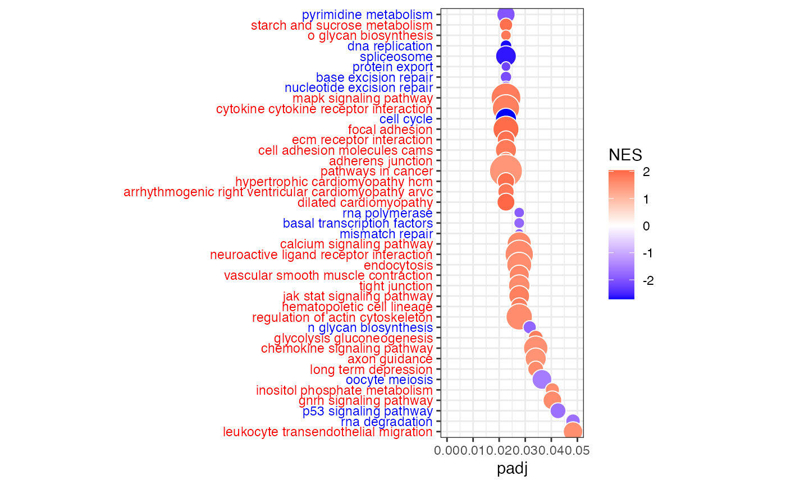

Inferring Gene Regulatory Networks from GTEx Gene Expression Data in R with OTTER
Rebekka Burkholz
2020-9-22
Source:vignettes/TutorialOTTER.Rmd
TutorialOTTER.RmdIntroduction
In this tutorial, we will learn how to infer OTTER gene regulatory networks from gene expression data with netZooR. It is an adaptation of the PANDA tutorial written by Camila Lopes-Ramos. We will focus on two examples: (1) the LCL cell line and (2) whole blood samples from the GTEx gene expression data. OTTER has been developed from a machine learning perspective in close analogy to PANDA. For this reason, we will follow the same steps as in the respective tutorial for PANDA.
First, we will build one regulatory network for LCL cell line samples and one for whole blood samples. Next, we will compare the two networks by a pathway enrichment analysis for differentially targeted genes.
Cell lines are an essential tool in biomedical research and are often used as surrogates for tissues. LCLs (obtained from the transformation of B cells present in whole blood) are among the most widely used continuous cell lines with the ability to proliferate indefinitely. By comparing the regulatory networks of LCL cell lines with its tissue of origin (whole blood), we find that LCLs exhibit large changes in their patterns of transcription factor regulation, specifically a loss of repressive transcription factor targeting of cell cycle genes.
Install packages
if (!requireNamespace("BiocManager", quietly = TRUE))
install.packages("BiocManager",repos = "http://cran.us.r-project.org")
BiocManager::install("fgsea")
install.packages("reshape2",repos = "http://cran.us.r-project.org")
install.packages("ggplot2",repos = "http://cran.us.r-project.org")
install.packages("devtools")
library(devtools)
devtools::install_github("netZoo/netZooR", build_vignettes = TRUE)OTTER
Background of OTTER
OTTER (Optimize to Estimate Regulation) is a general method to infer
a bipartite network \(W\) from noisy
observations of its projections \(WW^T\) and \(W^TW\). It is explained in detail in the
accompanying publication https://www.biorxiv.org/content/10.1101/2020.06.23.167999v2.
In this tutorial, we are particularly interested in constructing a gene
regulatory network \(W\) between
transcription factors (TFs) and genes. Higher link weights are
associated with a higher probability of TFs binding to the promoter
region of a gene. 
OTTER requires the following inputs: (1) a correlation matrix \(C\), which is based on gene expression data, (2) protein-protein interactions represented by the matrix \(P\), and (3) an initial guess \(W_0\) of \(W\), which we base on TF binding motifs. Feel free to play with other choices of \(C\), \(P\), and \(W_0\) as well.
OTTER solves the following optimization problem with ADAM gradient
descent: \[\min_W \frac{(1-\lambda)}{4}\Vert
WW^T - \tilde{P} \Vert^2 + \frac{\lambda}{4} \Vert W^TW - C \Vert^2 +
\frac{\gamma}{2} \Vert W \Vert^2,\] which links transformed
protein-protein interactions \(\tilde{P} =
P+2.2\) and the gene expression correlation matrix \(C\) with the projections of the unknown
gene regulatory network \(W\). 
Gradient descent is an iterative optimization method, which needs to be initialized. OTTER starts from \(\tilde{P}W_0\), as this choice defines the current state-of-the-art in gene regulatory network inference based on gene expression data (see the original paper). The transformation \(\tilde{P}W_0\) assumes that binding events to genes with a high number of TF bindings sites are more likely. More details can be found in the original paper.
OTTER parameters
The success of OTTER depends greatly on the right choice of parameters. Some parameters are related to the OTTER objective, while others refer to the ADAM gradient descent approach. If we want to call OTTER with the original parameters that have been tuned to infer gene regulatory networks for breast cancer and cervix cancer tissues (see original paper), we can simply call the otter function as \(W <- otter(W_0,P,C)\). This sets the original parameters to \(\lambda = 0.0035, \gamma = 0.335, Iter = 32, \eta = 0.00001, bexp = 1\), where \(\lambda \in [0,1]\) is a tuning parameter in the OTTER objective that decides how much importance we give to matching \(C\) or \(\tilde{P}\). \(\gamma \geq 0\) is a regularization parameter in the OTTER objective, which corrects for high noise in \(\tilde{P}\) and \(C\). The parameters \(Iter = 32, \eta = 0.00001, bexp = 1\) refer to the gradient descent procedure, where \(Iter\) controls the number of gradient steps, \(\eta\) the stepsize, and \(bexp\) the exponential decay of the stepsize. In the examples that we study next, we will only use the default parameters for simplicity.
OTTER Network Inference
First, we have to define the input matrices \(P\), \(C\), and \(W_0\). Let’s start with \(P\) and \(W_0\) and locate our ppi data (to construct P) and motif priors (for W_0). The ppi represents physical interactions between transcription factor proteins, and is an undirected network. The transcription factor motif prior represents putative regulation events where a transcription factor binds in the promotor of a gene to regulate its expression, as predicted by the presence of transcription factor binding motifs in the promotor region of the gene. The motif prior is thus a directed bipartite network linking transcription factors to their predicted gene targets. These are small example priors for the purposes of demonstrating this method. A complete set of priors by species can be downloaded from: https://sites.google.com/a/channing.harvard.edu/kimberlyglass/tools/resources
Let’s take a look at the priors:
# download motif and ppi file from AWS Bucket
system("curl -O https://netzoo.s3.us-east-2.amazonaws.com/netZooR/tutorial_datasets/motif_subset.txt")
system("curl -O https://netzoo.s3.us-east-2.amazonaws.com/netZooR/tutorial_datasets/ppi_subset.txt")
motif <- read.delim("./motif_subset.txt", stringsAsFactors=F, header=F)
ppi <- read.delim("./ppi_subset.txt", stringsAsFactors=F, header=F)
ppi[1:5,]
#> V1 V2 V3
#> 1 ASCL1 ASCL1 1.000
#> 2 ASCL1 BHLHE41 0.314
#> 3 ASCL1 DLX3 0.188
#> 4 ASCL1 EN2 0.790
#> 5 ASCL1 HES4 0.451
motif[1:5,]
#> V1 V2 V3
#> 1 ASCL1 RPAP3 0
#> 2 ASCL1 ACSM3 0
#> 3 ASCL1 CREBBP 0
#> 4 ASCL1 ZNF263 0
#> 5 ASCL1 RALA 0
print(dim(ppi))
#> [1] 430 3
print(dim(motif))
#> [1] 49950 3Next we locate our expression data and filter out genes, which are not expressed in too many samples. As example, we will use a subset of the GTEx version 7 RNA-Seq data, downloaded from https://gtexportal.org/home/datasets. We start with a subset of RNA-Seq data (tpm normalized) for 1,000 genes from 130 LCL cell line samples and 407 whole blood samples.
# dowload and load the GTEx expression matrix (tpm normalized expression)
system("curl -O https://netzoo.s3.us-east-2.amazonaws.com/netZooR/tutorial_datasets/expression_tpm_lcl_blood_subset.txt")
exp <- read.delim("./expression_tpm_lcl_blood_subset.txt", stringsAsFactors = F, check.names = F)
# Log transform the tpm normalized expression
exp <- log2(exp+1)
# Determine the number of non-NA/non-zero rows in the expression data. This ensures that we have enough values in the vectors to calculate pearson correlations between gene expression profiles in the construction of the gene co-expression prior.
zero_na_counts <- apply(exp, MARGIN = 1, FUN = function(x) length(x[(!is.na(x) & x!=0) ]))
# Maintain only genes with at least 20 valid gene expression entries
exp <- exp[zero_na_counts > 20,]
# The set of genes in the expression, motif and ppi matrices must be the same
exp <- exp[rownames(exp) %in% motif$V2,]
motif_subset <- motif[(motif$V1 %in% rownames(exp)) & (motif$V2 %in% rownames(exp)),]
ppi_subset <- ppi[(ppi$V1 %in% motif_subset$V1) & (ppi$V2 %in% motif_subset$V1),]
# Load the sample ids of LCL samples
system("curl -O https://netzoo.s3.us-east-2.amazonaws.com/netZooR/tutorial_datasets/LCL_samples.txt")
lcl_samples <-fread("./LCL_samples.txt", header = FALSE, data.table=FALSE)
# Select the columns of the expression matrix corresponding to the LCL samples
lcl_exp <- exp[,colnames(exp) %in% lcl_samples[,1]]
# Load the sample ids of whole blood samples
system("curl -O https://netzoo.s3.us-east-2.amazonaws.com/netZooR/tutorial_datasets/WholeBlood_samples.txt")
wblood_samples <-fread("./WholeBlood_samples.txt", header = FALSE, data.table=FALSE)
# Select the columns of the expression matrix corresponding to the whole blood samples
wb_exp <- exp[,colnames(exp) %in% wblood_samples[,1]]For use in OTTER, we have to transform the edgelists into matrices and compute correlation matrices
#names of genes and transcription factors (tf)
geneNames <- unique(motif_subset[,2])
tfNames <- unique(motif_subset[,1])
#number of genes and tf
ng <- length(geneNames)
ntf <- length(tfNames)
#initial motif prior:
W0 <- matrix(data=0, nrow = ntf, ncol=ng, dimnames = list(tfNames, geneNames))
W0[cbind(motif_subset[,1], motif_subset[,2])] <- motif_subset[,3]
#protein-protein interaction matrix
P <- matrix(data=0, nrow = ntf, ncol=ntf, dimnames = list(tfNames, tfNames))
P[cbind(ppi_subset[,1],ppi_subset[,2])] <- ppi_subset[,3]
#correlation matrices
C_lcl <- cor(t(lcl_exp))
C_wb <- cor(t(wb_exp))Now we can run OTTER. We want to generate two gene regulatory networks for comparison, one based on the LCL and one based on the whole blood data. Hence, we also have to run OTTER twice. Note that the matrices \(P\) and \(W_0\) are identical in each run. The input to OTTER only differ in the correlation matrix \(C_{lcl}\) or \(C_{wb}\), respectively.
OTTER networks have relatively small weights because of the internal normalization of edges. But the scaling does not matter for the prediction of regulatory links. The higher the edge weight, the higher is the probability that a transcription factor binds to the promoter region of a gene and regulates its expression. For convenience, we multiply all weights with a factor that sets the maximum weight to one.
Visualizing networks in Cytoscape
In this section we will visualize parts of the network using the Cytoscape software. Download Cytoscape from: https://cytoscape.org
Preparing data to plot
# We will use the function vis.panda.in.cytoscape to plot a set of nodes and edges on Cytoscape. The input for this function is a data.frame of edges to plot with 4 columns: "tf", "gene", "motif" (TF motif present or not on gene promoter), "force" (edge weight calculated by OTTER).
lcl_vis <- melt(otterLCL)
#> Warning: The melt generic in data.table has been passed a matrix and will
#> attempt to redirect to the relevant reshape2 method; please note that reshape2
#> is superseded and is no longer actively developed, and this redirection is now
#> deprecated. To continue using melt methods from reshape2 while both libraries
#> are attached, e.g. melt.list, you can prepend the namespace, i.e.
#> reshape2::melt(otterLCL). In the next version, this warning will become an
#> error.
wb_vis <- melt(otterWB)
#> Warning: The melt generic in data.table has been passed a matrix and will
#> attempt to redirect to the relevant reshape2 method; please note that reshape2
#> is superseded and is no longer actively developed, and this redirection is now
#> deprecated. To continue using melt methods from reshape2 while both libraries
#> are attached, e.g. melt.list, you can prepend the namespace, i.e.
#> reshape2::melt(otterWB). In the next version, this warning will become an
#> error.
lcl_vis <- data.frame("TF"=as.character(lcl_vis[,1]),"Gene"=as.character(lcl_vis[,2]),"Motif"=NA,"Score"=as.numeric(lcl_vis[,3]),stringsAsFactors = FALSE)
wb_vis <- data.frame("TF"=as.character(wb_vis[,1]),"Gene"=as.character(wb_vis[,2]),"Motif"=NA,"Score"=as.numeric(wb_vis[,3]),stringsAsFactors = FALSE)
head(lcl_vis)
#> TF Gene Motif Score
#> 1 ASCL1 RPAP3 NA -0.025403065
#> 2 BARX1 RPAP3 NA -0.031608707
#> 3 BHLHE41 RPAP3 NA -0.025950559
#> 4 CEBPD RPAP3 NA 0.011696100
#> 5 CEBPZ RPAP3 NA -0.026022708
#> 6 CENPB RPAP3 NA -0.003328924Plot the 200 highest edge weights
n=200 # number of edges to plot
top <- order(lcl_vis$Score,decreasing=T)[1:n]
lcl_vis_top <- lcl_vis[top,]
# Plot in cytoscape (open the cytoscape software before running this command)
vis.panda.in.cytoscape(lcl_vis_top, network_name="LCL")
# Here we will load a customized visual style for our network, in which TF nodes are orange circles, target gene nodes are blue squares, and edges shade and width are the edge weight (likelyhood of regulatory interaction between the TF and gene). You can further customize the network style directly from Cytoscape.
create.panda.style(style_name="PandaStyle")Plot the top differential edges betwen LCL and WB
# Select the top differential edge weights betweeen LCL and whole blood
diffRes <- panda.diff.edges(lcl_vis, wb_vis, condition_name="LCL")
head(diffRes)
# Number of differential edges is:
nrow(diffRes)
# Select the top differential edges higher in LCL to plot in Cytoscape
n=200 # number of edges to select from each condition
diffResLCL <- diffRes[diffRes$LCL=="T",]
diffResLCL <- diffResLCL[order(diffResLCL$Score,decreasing=TRUE),][1:n,]
# Select the top differential edges higher in whole blood to plot in Cytoscape
diffResWB <- diffRes[diffRes$LCL=="F",]
diffResWB <- diffResWB[order(diffResWB$Score,decreasing=TRUE),][1:n,]
# Combine top differential edges in LCL and WB to plot in Cytoscape
diffRes_vis <- rbind(diffResLCL, diffResWB)
# Plot the network
# Purple edges indicate higher edge weight in the defined "condition_name" parameter (LCL in our example), and green edges indicate higher edge weight in the other condition (whole blood in our example).
vis.diff.panda.in.cytoscape(diffRes_vis, condition_name = "LCL", network_name="diff.PANDA")
# Apply the style to the network
create.diff.panda.style(style_name="Diff.PandaStyle", condition_name="LCL")Calculating degree
- out-degrees of TFs: sum of the weights of edges pointing to a TF
- in-degrees of genes: sum of the weights of edges pointing to a gene
lcl_outdegree <- apply(otterLCL, 1, sum)
wb_outdegree <- apply(otterWB, 1, sum)
lcl_indegree <- apply(otterLCL, 2, sum)
wb_indegree <- apply(otterWB, 2, sum)
degreeDiff <- lcl_indegree-wb_indegree
head(degreeDiff)
#> RPAP3 ACSM3 CREBBP ZNF263 RALA PSMB1
#> -0.006887092 -0.001475058 0.002100493 0.005429057 -0.017758478 -0.048606106Gene Set Enrichment Analysis
Well will use the fgsea package to perform a gene set enrichment analysis. Inputs are a ranked gene list (for example the gene in-degree difference between LCL and whole blood) and a list of gene sets (or signatures) in gmt format to test for enrichment. The gene sets can be downloaded from MSigDB: http://software.broadinstitute.org/gsea/msigdb The same gene annotation should be used in the ranked gene list and the gene sets. In our example, we will use the KEGG pathways downloaded from MSigDB.
Run fgsea
system("curl -O https://netzoo.s3.us-east-2.amazonaws.com/netZooR/tutorial_datasets/c2.cp.kegg.v7.0.symbols.gmt")
pathways <- gmtPathways("./c2.cp.kegg.v7.0.symbols.gmt")
# To retrieve biological-relevant processes, we will load and use the complete ranked gene list (consisting of 26,077 out of 27,174 genes). The in-degree difference has been calculated based on the complete networks instead of the subnetworks, which we constructed in this tutorial as small examples (with reduced run time).
system("curl -O https://netzoo.s3.us-east-2.amazonaws.com/netZooR/tutorial_datasets/lclWB_indegreeDifference_otter.txt")
degreeDiff_all <- read.delim("./lclWB_indegreeDifference_otter.txt",stringsAsFactors = F,header=F)
degreeDiff_all <- setNames(degreeDiff_all[,2], degreeDiff_all[,1])
fgseaRes <- fgsea(pathways, degreeDiff_all, minSize=15, maxSize=500, nperm=1000)
head(fgseaRes)
#> pathway pval padj
#> <char> <num> <num>
#> 1: KEGG_GLYCOLYSIS_GLUCONEOGENESIS 0.006493506 0.03401666
#> 2: KEGG_CITRATE_CYCLE_TCA_CYCLE 0.262042389 0.41785138
#> 3: KEGG_PENTOSE_PHOSPHATE_PATHWAY 0.059917355 0.14331584
#> 4: KEGG_PENTOSE_AND_GLUCURONATE_INTERCONVERSIONS 0.412863071 0.59412003
#> 5: KEGG_FRUCTOSE_AND_MANNOSE_METABOLISM 0.041237113 0.11229183
#> 6: KEGG_GALACTOSE_METABOLISM 0.344608879 0.51256951
#> ES NES nMoreExtreme size leadingEdge
#> <num> <num> <num> <int> <list>
#> 1: 0.4360719 1.772266 2 58 HK1, ENO....
#> 2: -0.3428560 -1.151569 135 29 DLST, PC....
#> 3: 0.4435710 1.412294 28 21 ALDOC, P....
#> 4: 0.3180477 1.019066 198 22 UGT1A1, ....
#> 5: 0.4118882 1.471062 19 31 HK1, ALD....
#> 6: 0.3247973 1.075394 162 25 GLB1, HK....
# Subset to pathways with FDR < 0.05
sig <- fgseaRes[fgseaRes$padj < 0.05,]
# Get the top 10 significant pathways enriched for genes having lower targeting in LCLs
sig[order(sig$NES)[1:10],]
#> pathway pval padj ES NES
#> <char> <num> <num> <num> <num>
#> 1: KEGG_CELL_CYCLE 0.001818182 0.02261114 -0.5948628 -2.710311
#> 2: KEGG_DNA_REPLICATION 0.001964637 0.02261114 -0.7725018 -2.680736
#> 3: KEGG_SPLICEOSOME 0.001845018 0.02261114 -0.5766563 -2.608029
#> 4: KEGG_PROTEIN_EXPORT 0.001901141 0.02261114 -0.6851677 -2.175693
#> 5: KEGG_NUCLEOTIDE_EXCISION_REPAIR 0.001890359 0.02261114 -0.5785505 -2.122877
#> 6: KEGG_BASE_EXCISION_REPAIR 0.001908397 0.02261114 -0.5965607 -2.081084
#> 7: KEGG_PYRIMIDINE_METABOLISM 0.001848429 0.02261114 -0.4606911 -1.994391
#> 8: KEGG_MISMATCH_REPAIR 0.003846154 0.02769953 -0.6107380 -1.912916
#> 9: KEGG_RNA_POLYMERASE 0.003816794 0.02769953 -0.5731001 -1.904831
#> 10: KEGG_N_GLYCAN_BIOSYNTHESIS 0.005555556 0.03172043 -0.4815544 -1.809958
#> nMoreExtreme size leadingEdge
#> <num> <int> <list>
#> 1: 0 121 ORC6, CD....
#> 2: 0 34 RFC5, RF....
#> 3: 0 118 PHF5A, S....
#> 4: 0 23 IMMP1L, ....
#> 5: 0 41 RFC5, RF....
#> 6: 0 33 FEN1, HM....
#> 7: 0 90 POLR2D, ....
#> 8: 1 22 RFC5, RF....
#> 9: 1 28 POLR2D, ....
#> 10: 2 45 B4GALT2,....Bubble plot of top differentially targeted pathways
Bubble plot of gene sets (KEGG pathways) on y-axis and adjusted p-value (padj) on x-axis. Bubble size indicates the number of genes in each gene set, and bubble color indicates the normalized enrichment score (NES). Blue is for negative NES (enrichment of higher targeted genes in whole blood), and red is for positive NES (enrichment of higher targeted genes in LCL).
dat <- data.frame(fgseaRes)
# Settings
fdrcut <- 0.05 # FDR cut-off to use as output for significant signatures
dencol_neg <- "blue" # bubble plot color for negative ES
dencol_pos <- "red" # bubble plot color for positive ES
signnamelength <- 4 # set to remove prefix from signature names (2 for "GO", 4 for "KEGG", 8 for "REACTOME")
asp <- 3 # aspect ratio of bubble plot
charcut <- 100 # cut signature name in heatmap to this nr of characters
# Make signature names more readable
a <- as.character(dat$pathway) # 'a' is a great variable name to substitute row names with something more readable
for (j in 1:length(a)){
a[j] <- substr(a[j], signnamelength+2, nchar(a[j]))
}
a <- tolower(a) # convert to lower case (you may want to comment this out, it really depends on what signatures you are looking at, c6 signatures contain gene names, and converting those to lower case may be confusing)
for (j in 1:length(a)){
if(nchar(a[j])>charcut) { a[j] <- paste(substr(a[j], 1, charcut), "...", sep=" ")}
} # cut signature names that have more characters than charcut, and add "..."
a <- gsub("_", " ", a)
dat$NAME <- a
# Determine what signatures to plot (based on FDR cut)
dat2 <- dat[dat[,"padj"]<fdrcut,]
dat2 <- dat2[order(dat2[,"padj"]),]
dat2$signature <- factor(dat2$NAME, rev(as.character(dat2$NAME)))
# Determine what labels to color
sign_neg <- which(dat2[,"NES"]<0)
sign_pos <- which(dat2[,"NES"]>0)
# Color labels
signcol <- rep(NA, length(dat2$signature))
signcol[sign_neg] <- dencol_neg # text color of negative signatures
signcol[sign_pos] <- dencol_pos # text color of positive signatures
signcol <- rev(signcol) # need to revert vector of colors, because ggplot starts plotting these from below
# Plot bubble plot
g<-ggplot(dat2, aes(x=padj,y=signature,size=size))
g+geom_point(aes(fill=NES), shape=21, colour="white")+
theme_bw()+ # white background, needs to be placed before the "signcol" line
xlim(0,fdrcut)+
scale_size_area(max_size=10,guide="none")+
scale_fill_gradient2(low=dencol_neg, high=dencol_pos)+
theme(axis.text.y = element_text(colour=signcol))+
theme(aspect.ratio=asp, axis.title.y=element_blank()) # test aspect.ratio
#> Warning: Vectorized input to `element_text()` is not officially supported.
#> ℹ Results may be unexpected or may change in future versions of ggplot2.